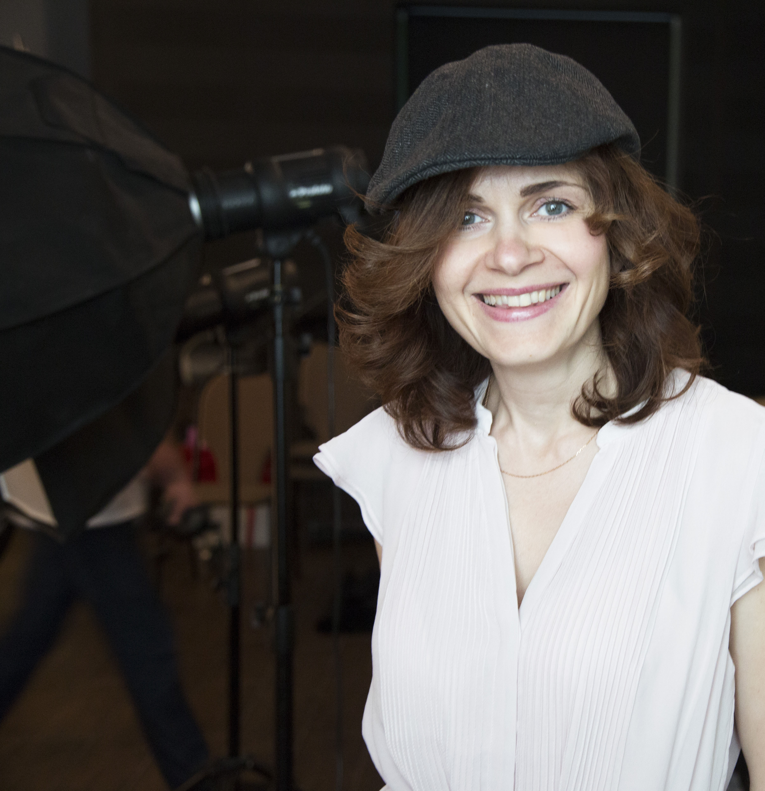

Текст о себе - это анализ
Приветствую
Родилась в Москве. Закончила институт Культуры. Случайно попав в фотошколу ВГИК в 2009 году увлеклась фотографией и альтернативными процессами фотопечати.

Я - фотограф
Фотография - это неотемлемая часть жизни, возможность увидеть красоту в повседневных вещах, это средство общения с миром.
Фотография - это неотемлемая часть жизни, возможность увидеть красоту в повседневных вещах, это средство общения с миром.

Публикации
В журналах "Российское фото", "B&W Minimalism Magazine".

Победитель
международных фотоконкурсов: "Зафиксируй мир", Russian IPA 2017.
11 Похвальных грамот на Internation Photo Awards 2018.

Выставки
«Импровизация и интерпретации» в Центре современного искусства «Винзавод», фотогалерея UnDerGroUnD.